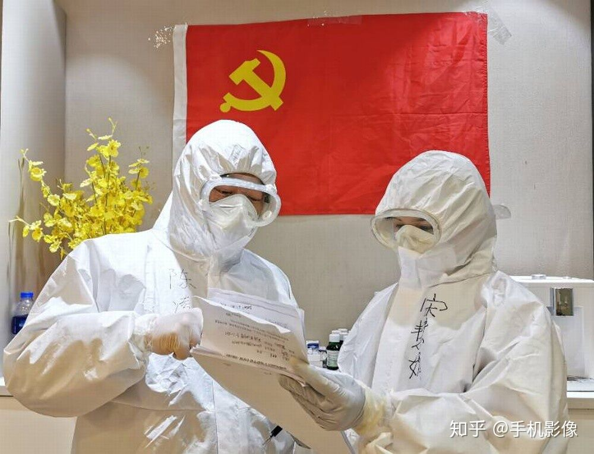

第二版
第二版

2019年，是值得被铭记的一年。岁末年初，人们正沉浸于新春之欢乐，期盼来年幸福时，没有想到，一场危机，悄然来临。突如其来的疫情，打乱了我们正常的生活节奏。严峻的疫情形势，每天不断上涨的感染人数，受到了全国人民的关心牵挂。为了战胜疫情，举国同心，每一位医护工作者都坚守岗位，为人们的生命健康安全奋战；我们普通民众也心系疫情中的同胞，为他们支持加油，为克服疫情献上绵薄之力。
疫情的爆发，让我们看到了青年人的担当。在这场没有硝烟的战争面前，每个人都心怀家国，团结一致渡过难关。我们看到，一位位不畏危难的医护工作者在自己的岗位上发挥自己的力量；我们看到，一位位社区志愿者不怕病毒的侵袭，为大家服务奉献。在肆虐的病毒下，一位位青年面对未知的风险与困难，甘愿做逆行者，展现了青春的风采。这是我们在疫情中看到的众多令人感动的情景的一幕，每个人在疫情面前展现了自己的担当。
没有跨不过的高山，没有渡不过的大河。在所有人的努力下，在牺牲了经济利益下，我们成功在四月时控制住了疫情，在抗疫这场战争中取得了振奋人心的胜利。如今已是后疫情时代，但这并不代表着疫情再也不会袭来，而是意味着我们已进入了疫情防控常态化的时代。
在后疫情时代，经济，教育，文化在疫情的洗礼下有了新的变化，人们的思想与观念也有了新的天地。这时候，我们该如何迎接新的挑战，在这场疫情中，我们又获得了哪些启示？
这场疫情，让我们看到了我国制度的先进性与优越性。在迅速爆发的疫情面前，也只有我国有如此强大的执行力，可以不顾一部分损失，以人民的生命健康安全为重，以“壮士断腕”的魄力决定封城和停工停产，将大部分产能用于医疗用品的快速生产，阻止疫情的扩散与蔓延。抗疫的胜利，也与传承悠久的中华文化与精神有着密切联系。从古至今，中华民族在灾难面前都不会屈服，而是齐心协力战胜困难。无论是多年前的非典还是今年的新冠，中华民族的每一个人都坚定信念，坚守职责，共同为人民安全和利益奋斗，奉献自己的力量。而在此次疫情面前，更加证实了我们坚守的理念——人民生命健康安全才是社会发展最重要的保障。
这次疫情，让人们更加注重生命健康安全。后疫情时代，对于我们在校大学生而言，健康，应该放在首位。所以需要坚持适量的体育锻炼，作息饮食规律化，只有拥有强健的体魄和健康的身体，才能高效的，无后顾之忧地学习与研究，实现自己的人生理想。
战胜疫情后的我们，经济开始复苏。复工复产全面推进，经济的腾飞又恢复到了令人瞩目的“中国速度”。此时人们的消费观也有了一些改变，健康与生态的安全与完善将会受到更多重视，理性的消费观念也会深入人心。
后疫情时代，信息技术行业以其便利与实时性展现了传统行业所不具备的独特优势。疫情期间为了防止传染，大多数人都“宅”在家里，这为信息技术提供服务创造力有利的条件。我对此也深有体会。当时正值高三的我，因为疫情的原因，无法到学校展开复习，可高考迫在眉睫。如何才能不落下我们的学业呢？“停课不停学”——运用网课、直播等方式进行在线教育，成为疫情时代新的学习方式。曾今少有关注的网课，此时大放光彩。通过计算机或手机等电子产品作为媒介，网课直播在老师和学生间架起了一座桥梁。不需要去学校亲身听课，就能高效便利的学习。在疫情期间，网课直播作为新兴的学习方式与平台，减少了疫情的传播，还让我们学生获得学习的平台与机会，是一次很有效的创新举动。除此之外，疫情通，MOOC等软件的广泛利用，更是对信息技术的创新与推广。极大地方便了后疫情时代大学生的精准管理与扩展学习。
后疫情时代，我们大学生更应该看清自己身上的责任。作为祖国发展的未来与后备力量，我们肩负着让祖国繁荣富强的时代使命与责任。如何实现自己的人生价值？首先是要怀着积极进取的精神，努力学习专业知识。其次是要不怕艰难困苦，坚持奋斗。而最重要的便是要选定正确的方向，去做对青年有价值的人生选择，找到合适的实现人生意义的方向与路径，为自己，为祖国而奋斗。
疫情已然结束，但疫情带来生活的变化仍然需要我们探索解决，留下的启示也值得我们深入思考。后疫情时代的来临，将是一个新的篇章的开始。